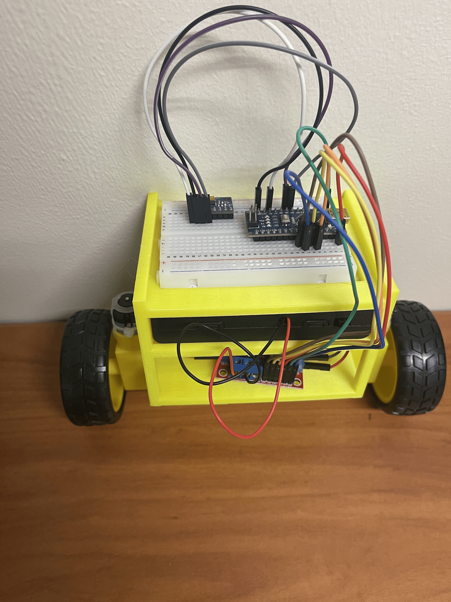
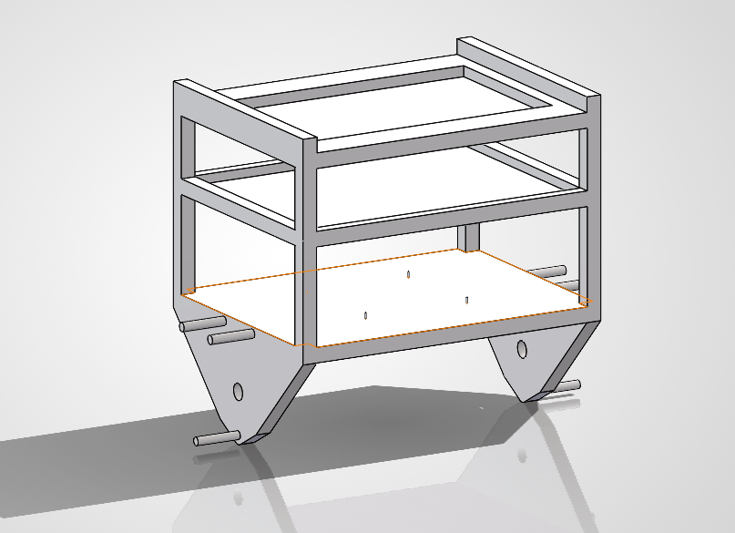

Self-Balancing Robot
A two-wheeled robot that balances itself upright with no outside support — reading its own tilt off an IMU and correcting for it, roughly a hundred times a second, through a hand-tuned PID controller.

The goal
An inverted pendulum on wheels is a classic controls problem precisely because it's unstable by default — left alone, it falls over. The only way to keep it upright is to constantly sense which way it's tipping and drive the wheels underneath it fast enough to catch it, the same basic idea behind a Segway. I wanted to build one from scratch: wire the electronics, write the control loop, and get it to actually balance in front of me instead of just simulating it.
How it works: reading tilt, then correcting for it
An MPU6050 (accelerometer + gyroscope) sits on top of the robot and reports its tilt angle, using the MPU6050_light library's built-in complementary filter to combine the gyroscope's fast-but-drifting reading with the accelerometer's slow-but-stable one into a clean angle estimate. Every loop, the Arduino compares that angle to "upright" (0°) and feeds the error into a PID controller: proportional (react to how far it's tipped), integral (correct for any steady lean), and derivative (damp out wobble so it doesn't overcorrect). The result drives an L298N motor driver, which spins both wheels toward whichever side the robot is falling — forward if it's tipping forward, backward if it's tipping backward.
error = setpoint - angle; // how far from upright
integral = integral + error; // running sum — the I term
derivative = error - lastError; // change since last loop — the D term
output = Kp * error + Ki * integral + Kd * derivative;
lastError = error;
output = constrain(output, -255, 255); // motor PWM only goes 0–255
Kp, Ki, and Kd are the three gains I hand-tuned on the bench — see "Tuning it," below.
One thing I added early on: a hard cutoff if the robot ever tips past ±45°, since at that point it's already fallen and driving the motors harder just makes it worse.
driveMotors(0);
integral = 0; // reset so it doesn't "wind up" while down
}
The chassis
I modeled and 3D printed a three-tier chassis in SolidWorks to keep the electronics organized and the center of mass low and centered over the wheel axle — both of which make the balancing problem easier before the control loop even runs. The bottom tier carries the motors and battery, the middle tier the L298N driver, and the top tier the breadboard with the Arduino and IMU.

Tuning it
Getting the loop running was the easy part; getting it to actually balance took iterative bench testing. Two early bugs stood out: sensor drift (the angle reading slowly wandering even when the robot sat still, fixed by the IMU's startup calibration) and a motor-direction fault (the wheels driving the way it was already falling instead of catching it — an easy fix once I recognized the symptom, just swap the motor leads or flip the direction logic). From there it was mostly gain tuning: raising Kp until the robot reacted quickly enough to catch a tip, then adding Kd to damp out the resulting oscillation so it wouldn't overshoot and rock back and forth.
The tuned robot held stable, unsupported balance for 20 seconds at a stretch and recovered from manual disturbances up to about 20° of tip.
What I took away
The control architecture here — complementary-filtered IMU angle feeding a PID loop — is a standard, well-documented approach, and I built on open Arduino/MPU6050 references rather than deriving it from scratch. What was actually mine was wiring the electronics, diagnosing the drift and direction faults through hands-on debugging, tuning the gains against a physical system that doesn't forgive a bad guess the way a simulation does, and designing and printing the chassis around it. That gap — between code that's theoretically correct and a physical system that actually stays upright on a desk — is most of what this project taught me.